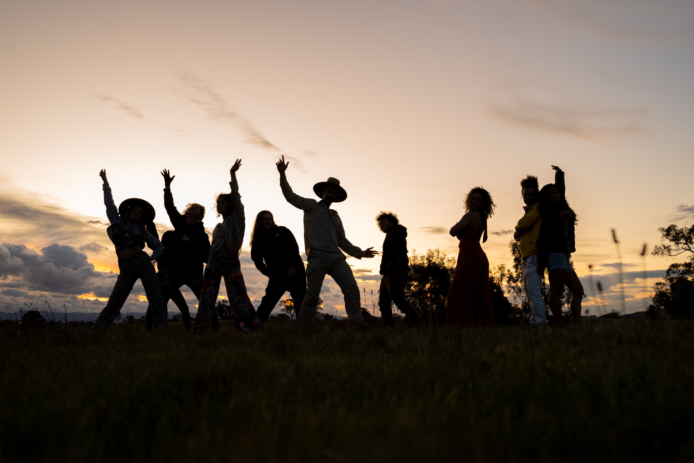
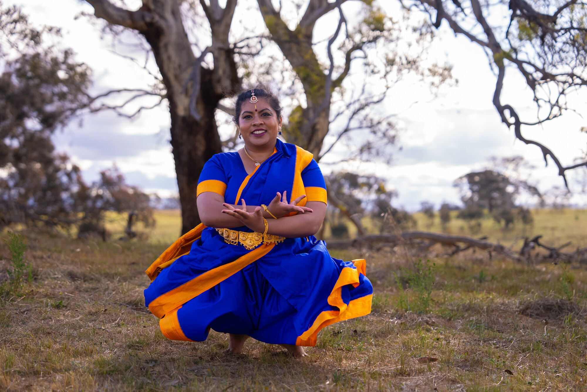
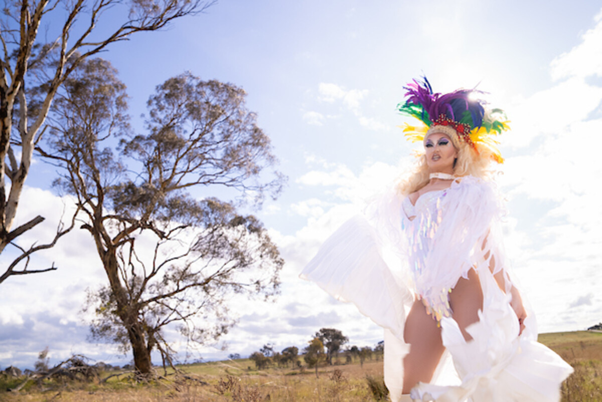
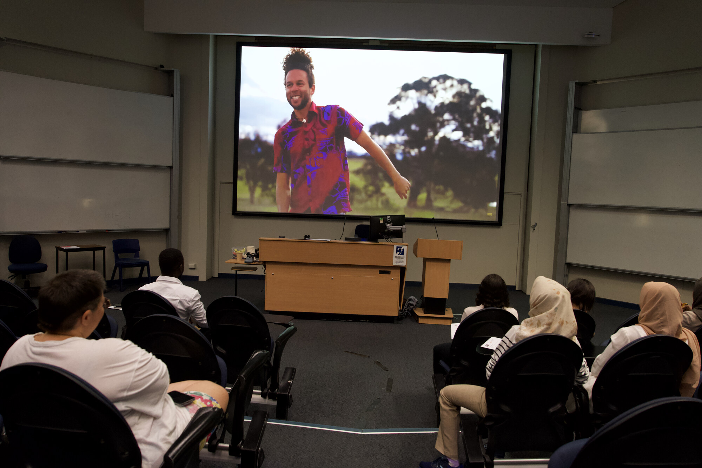
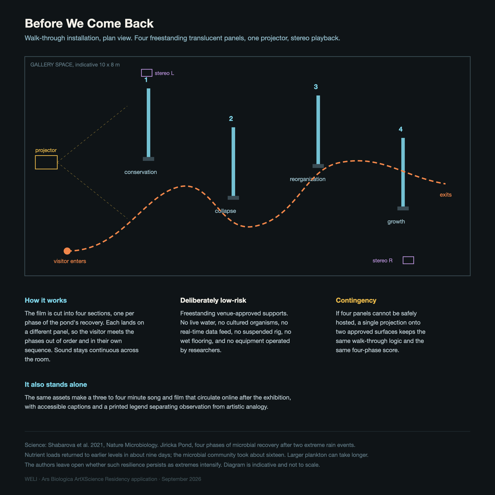

Ars Biologica ArtXScience Residency 2027-28 · Dr WELI
A pond can measure as recovered while the life inside it has not come back.
That is a real finding from the Biology Centre, and it is the song I want to write. Come Back Again: a pop single, a music film, and a room the visitor walks through.
I am Dr Weliton Menario Costa, WELI. I turn published research into pop music. My own PhD on kangaroo personality became a song and film that won the AAAS Dance Your PhD Overall Prize 2024 and travelled to 238 media features across five continents.
Overall WinnerAAAS Dance Your PhD 2024
238+media features, five continents. Guardian, NPR, BBC, Smithsonian. Isentia 2024
154,766views, 98.2% positive, 64.5% from press and sharing
1 of 30Falling Walls Engage 2025, worldwide
2 commissionsresearch to released song, on deadline
PhD + 9 yrsbehavioural ecology, ANU. Practice since 2017
What I make
One artwork, three parts. The room is the artwork; the film is one station inside it.
01 · The song
A pop single
Written from the finding the scientists choose. Their field recordings enter the track itself, as texture and as the starting points for rhythm and melody. It is released afterwards, so the research keeps travelling once the festival closes.
02 · The film
A music film
Shot in Ceské Budějovice with local performers, to music-industry standards, with no explanatory text on screen. I write and direct it, as I did for Kangaroo Time.
03 · The room
A spatial artwork
Six stops across three built stations, from the scientists' fieldwork and paper to a timed screening of the finished film. Positioned sound, so walking changes what you hear.
What I have done
Every line here has a public record a reader can check.
2023–24
Kangaroo TimePop song and music film from my own doctoral research. I wrote and directed it. Cast of 24 people from multicultural Canberra, none performers by trade. Production Nic Vevers (ANU Science); co-songwriter Nicholas Moynihan; sound Matthew Barnes. 27 named collaborators.
Cabra da Peste (G.O.A.T.)Commissioned by the Brazilian Ethology Society to open its 2024 annual meeting. In Portuguese, from my Honours research on female goat hierarchy, written and performed with Jon Panic. Made to a brief, to a date.
Opened the XLI Encontro Anual de Etologia
2023–24
The Photography ProjectStaged portrait series translating the same doctoral findings into people. Concept and creative direction mine; photographed by Tony Oliver and Reid Workman, with hair and make-up by Neha Suryavanshi, Shauna Priest and Anchal Goel.
Became my studio's visual identity
2024–25
Science and the PeopleMy workshop for researchers and artists. Delivered at National Science Week Australia, ANU Research Fest, and the Athens Science Festival with SciCo Greece.
Three countries 1 of 30 worldwide, Falling Walls
Kangaroo Time · watch two minutes
This is the closest existing example of the practice. The freshwater film takes it two steps further: the scientists' field recordings enter the sound itself, and the film is made to music-industry standards instead of to a competition brief, so it carries no explanatory text on screen.
Cabra da Peste · listen
In Brazilian Portuguese cabra names the animal and also names a person of real toughness. One phrase, literally true about the goats and literally true about the women the song addresses. That is how the research gets in without the track becoming a lecture.

Nine people, nine different shapes, one frame. The variation the research measured is the variation you are looking at.

The Photography Project. Each model stands in for something the research measured, photographed where the kangaroos were observed.

Same paddock, a different way of being looked at. Two portraits from one session.
Five years of professional practice, with a dated record
I performed through my doctorate, 2017 to 2021. The photography began in those same years, in the field: a photograph I took at the study site is published as Figure 2 of my 2021 ANU thesis, p.15, credited Image credits: Weliton Menario Costa. First independent releases 2023.
How I deliver it to you
What happens remotely, what happens in Ceské Budějovice, and what lands at each gate.
When
What I do
What you receive
Jan–Mar 2027 remote
Kick-off with the scientists and the host. We choose the research together. I read the paper and issue the material request.
Collaboration and rights framework. Research shortlist. Process videos 1–3.
Apr–Aug 2027 remote
Material exchange and the conversation about why they chose it. Songwriting. Three studio days in Sydney, one of them spent running the concept through their field recordings.
Source register. Finished master and stems before filming. Storyboard. Videos 4–8.
Sep 2027 on siteStay 1
Scientist and site meetings. Public listening and movement lab. Rehearsal with the local movement lead. The film shot with me and the local cast together.
Film shot. Public feedback documented. Approved source imagery. Video 9.
Oct 2027– Feb 2028 remote
Edit, scientist review of facts, captions and credits, then the Czech installation build and testing.
Your required written phase-two proposal with quotes and rider. Final film. Tested installation and maintenance guide. Videos 10–13.
Mar 2028 on siteStay 2
Install, test, screen, hold the public conversation with the scientists and performers, document, strike.
Completed exhibition and film. Engagement documented. Videos 14–15. Safe strike.
Fifteen short captioned process videos run from January 2027 to festival close, with credited, permission-cleared stills supplied to Ceské Budějovice 2028 at each phase. The full proposal carries the €15,000 production budget line by line, with two published price anchors and 8.9% contingency.
The method, and what I need from you
Step one is a conversation. No artistic decision comes before it.
Step
What happens
What I need from the scientists
01
We talk. I ask what you would most want a stranger to know, listening for findings that touch climate emergence, water resource management, sustainable agriculture, permaculture, geoengineering, and the effects that reach people living nearby. We choose the research together.
Your time, and your judgement on which finding matters most.
02
I read the chosen paper twice: once for the central problem, once for the sentence where the finding already carries a human feeling. The worked example below is that read, done on a real paper from your Centre.
Correction of anything I misread.
03
I ask for material that already exists and is already cleared. Nobody makes new recordings without agreement and resourcing.
Sound: water, rain, sampling, anything from your study systems, frequency and wave data where it exists. Image: microscopy, video, habitat, fieldwork, and any documented pattern.
04
Second conversation: why did you choose these? This is where I learn which pattern is meaningful and which is noise.
One call, and a sentence on each item.
05
I go away and write. Recordings become texture and the starting points for rhythm and melody. Your images shape the choreography, the script and the look of the room.
Nothing.
06
Three review points: the emotional premise and demo, the source descriptions and credits, then the rough cut and captions.
A veto over the science. Anything misleading gets changed.
The worked example, on a real paper from your Centre
Quote what you have
Release of dissolved nutrients from the pond is associated with inflow rates and community recovery, and returns to predisturbance levels before microbial compositions recover.Shabarova, Salcher, Porcal, Znachor, Nedoma, Grossart, Seďa, Hejzlar & Šimek (2021), Recovery of freshwater microbial communities after extreme rain events is mediated by cyclic succession, Nature Microbiology 6, p.479
The central problem underneath it
Extreme rain is arriving more often. After a flood, the chemistry can look as it did before while the living community has not finished coming back. A pond can measure as recovered and still not be recovered. For anyone managing water for a town, a fishpond or a farm, that gap is the real problem.
Translate it to a human emotion
Something has come back. I am not back yet.
That becomes the hook, across all three outcomes
In the song
The difference between one thing returning and another taking longer gives me a feeling to write from. The lyric follows the needs of a pop song, and the order of the paper stays in the paper.
In the film
I test movement and images with the local performers, using your permitted footage and observed patterns as reference.
In the room
The visitor meets your study and your material first, then my working documents, then the finished work. They can see where observation ends and interpretation begins.
This is a demonstration of method. If the team judges another paper a more urgent starting point, we use that one, and a forest-pond finding is never presented as a finding about a managed fishpond.
Who builds it, and who is in it
I lead. Specialists build. The performers live in the town.
Role
What they do, and what stays mine
Me
Principal artist, creative director, songwriter, performer, director of the film. I prepare my own body for the shoot and author the central choreography. Final approval on song, script, edit and route is mine.
Music producer
Arrangement, recording, mix, master, stems, over three Sydney studio days. One day exists to run the concept through your field recordings, so the science reaches the arrangement as well as the words.
Czech filmmaker
Photography and edit, to a treatment I write. Local to the town where the host's networks reach one.
Movement lead
A local professional. They adapt my choreography to the local performers, rehearse them, and stage the shoot with me.
Exhibition and AV
A Czech specialist prices, builds, tests, maintains and strikes the room, and writes the operating guide.
Everyone is paid, credited and holds their own permissions. The scientists advise on their research and material. They are neither unpaid crew nor presumed co-authors of the song.
In 2027 I hold a public lab. I play two drafts, anyone who wants to can try the movement, and what the room says changes the song before it is finished. Nobody has to dance or be filmed. I document at least two artistic decisions the room changed. In 2028 the finished work returns to the same people at the festival.

The format already runs. Twice in Canberra and once in Athens with SciCo Greece, so the 2027 lab is something I have delivered in a country that is not my own.
The installation, in the order you walk it
The artwork is the room. The film is one station inside it.
A short, accessible route between freestanding translucent fabric surfaces. Positioned speakers mean that walking changes what you hear, so the shape of the music is something you experience physically even when the film is not playing. Every label distinguishes what the scientists observed from what I made of it.
1 · The fieldworkImages of the work being done, from the research team and from my own time with them. You meet the people and the place before you meet any result.
2 · The publicationTheir paper, displayed and readable. The actual peer-reviewed science, credited, in the room.
3 · What they sent meAny authorised field or laboratory audio, photographs, video and documented patterns selected by the researchers, with site, recordist and limits identified. Environmental audio is not presented as the sound of a microbe.
4 · How I workedDocumentation of the creative process: photographs, short videos, my writing, lyric drafts and the visual scores. Printed brochures that visitors keep and use, covering the process and what sci pop is, and the different ways research can enter music.
5 · The mini cinemaA timed, captioned screening of the finished music film. You have already heard and seen the authorised sources from the selected study system.
6 · What happened nextIf the song is released by the festival, the room ends with the release data, the media coverage and whatever impact it has had. The work carries on past the gallery door, and the last thing you see is the evidence of that.
There is no live water, no organism display and no sensor dependency. If the full-run AV hire proves unaffordable, the route keeps the positioned sound and the physical surfaces, the process material goes to print, and one screen alternates between process and film.

The route in plan. An exhibition designer and AV technician price, build and test it against the real venue.
Travel, said plainly
Your specification, and the only version of it Sydney can fund
The call sets travel at two to five trips to Budweis plus two to Ars Electronica, funded up to €3,000. From Sydney, only the bottom of that range is fundable.
A return Sydney to Prague fare sits near €1,100. Two crossings consume the allowance almost exactly once airport transfers and the Prague and Linz rail are counted. A stress case reaches about €4,000. A third crossing does not fit, and I will not budget as though it does.
So I propose the minimum compliant version of your own terms: two stays, September 2027 and March 2028, with both Ars Electronica visits by rail from Budweis inside them. Everything else runs remotely. I arrive in September with the song finished and mastered, which is the one month when the performers, the scientists and the locations are available to the same shoot.
This needs your written agreement, since the call describes September as an optional second stay. If you require the February presence instead, the first stay can connect to a family trip to Brazil in August 2027 and fly Brazil to Prague, which also fits. One thing to confirm: which of the two stays carries the separately funded month of accommodation, because it changes the subsistence arithmetic.
Read the full proposal for the phase-by-phase schedule, the €15,000 production budget, the named candidate suppliers and the production dependencies.
sci pop, the term I use for this work, is set out in a paper deposited at doi.org/10.5281/zenodo.21387515. The four-step compositional method behind Kangaroo Time, Cabra da Peste and this proposal is written up separately and is in preparation.
This is a proposal for the 2027-28 residency. Collaborators, venue, research-material rights and equipment remain subject to agreement, and the budget and timetable will be revised with the residency team at the October to November 2027 stage. Suppliers named in the full proposal are candidates I would approach, and none has been commissioned or has quoted for this project.